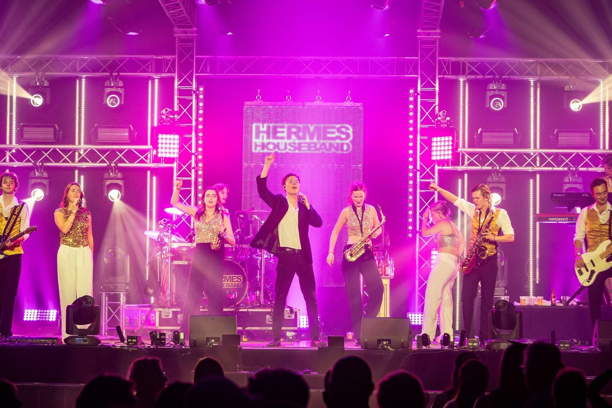

Evenementen / Vereniging & jubileum
Een jubileum
om nooit te vergeten.
Jubilea, lustra, concerten en verenigingsfeesten
CH 01Vereniging & jubileum
Honderd jaar sportclub, een lustrum van de schutterij of een bijzonder concert van de harmonie. Voor zo’n moment wil je techniek die het verhaal van je vereniging groot maakt. Daar denken we graag in mee, ook met een beperkt budget. Voor Sportclub’25 in Bocholtz zetten we zo een productie neer waar het dorp nog over praat.
Dit regelen wij voor je
- Volledige productie van tent of zaal
- Show met licht, effecten en visuals
- Geluid voor live acts
- Stroom en infrastructuur
- Meedenken over planning en budget
CH 02Onze aanpak
Zo zorgen we
dat het klopt.
Het verhaal van je club
We denken mee over hoe je jubileum eruit moet zien en wat er op het programma staat, en vertalen dat naar techniek.
Een echte show
Met licht, effecten en visuals van MATRIX E.I.L. krijgt je jubileum de uitstraling van een groot podium.
Binnen je budget
Verenigingen werken vaak met vrijwilligers en een vast budget. We zijn eerlijk over wat er kan en wat het kost.
CH 03Welke techniek
Alles uit
één hand.
CH 04Uit de praktijk
Zo zag het
eruit.
?Vragen over vereniging & jubileum
Goed om
te weten.
Kunnen jullie een tent of zaal volledig aankleden?
Ja. Van geluid en licht tot stroom en podiumtechniek: we verzorgen de complete productie.
Kunnen vrijwilligers van onze club helpen?
Zeker. We stemmen vooraf af wie wat doet, zodat iedereen weet waar hij of zij aan toe is.
Wat deden jullie bij Sportclub’25?
Voor het honderdjarig bestaan van Sportclub’25 in Bocholtz verzorgden we de productie en techniek, met lichtontwerp, visuals en show door MATRIX E.I.L.
Sleep de stekker erinStroom staat erop. Nu jouw event.
Vertel ons wat je
van plan bent.
Een kort berichtje is genoeg. We denken vrijblijvend mee en sturen je een voorstel op maat.